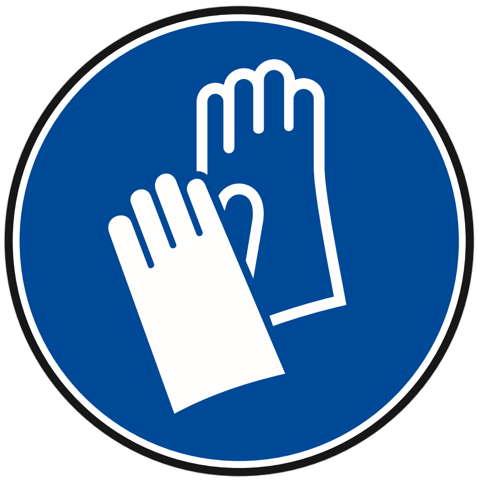
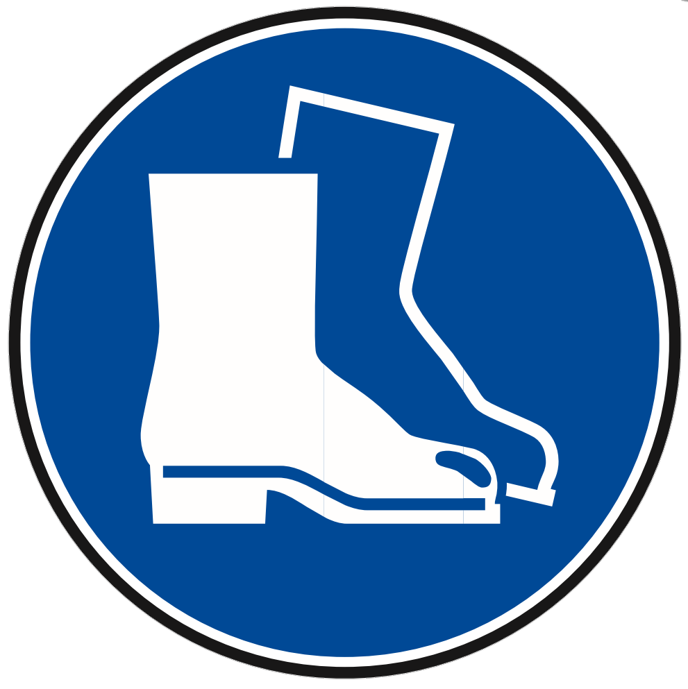
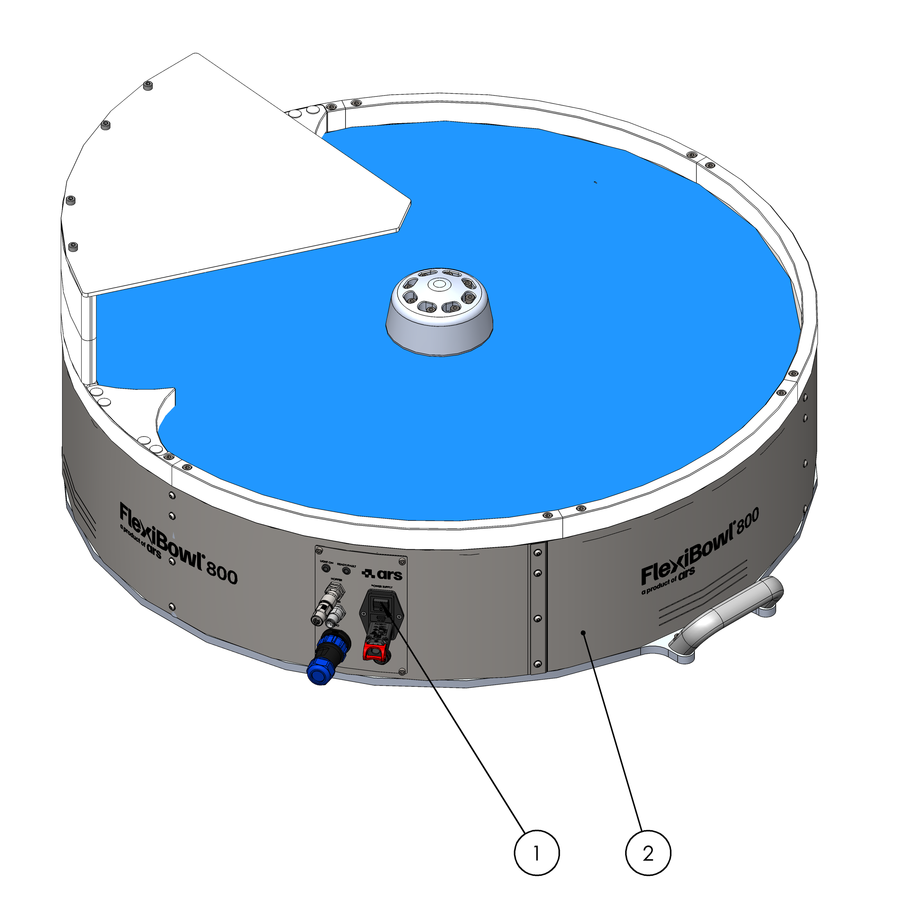
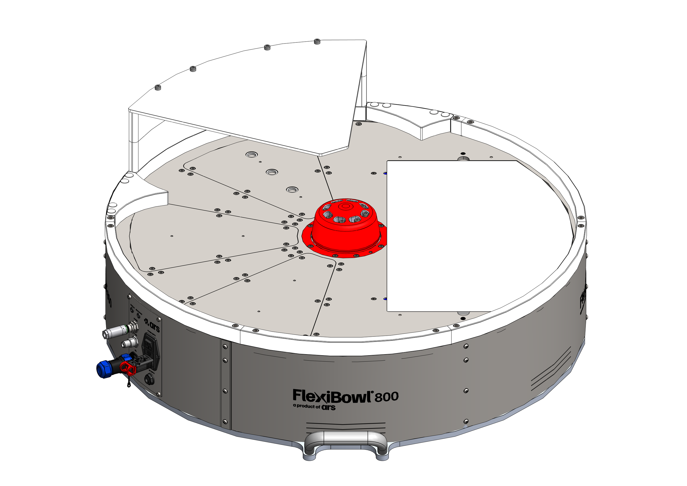
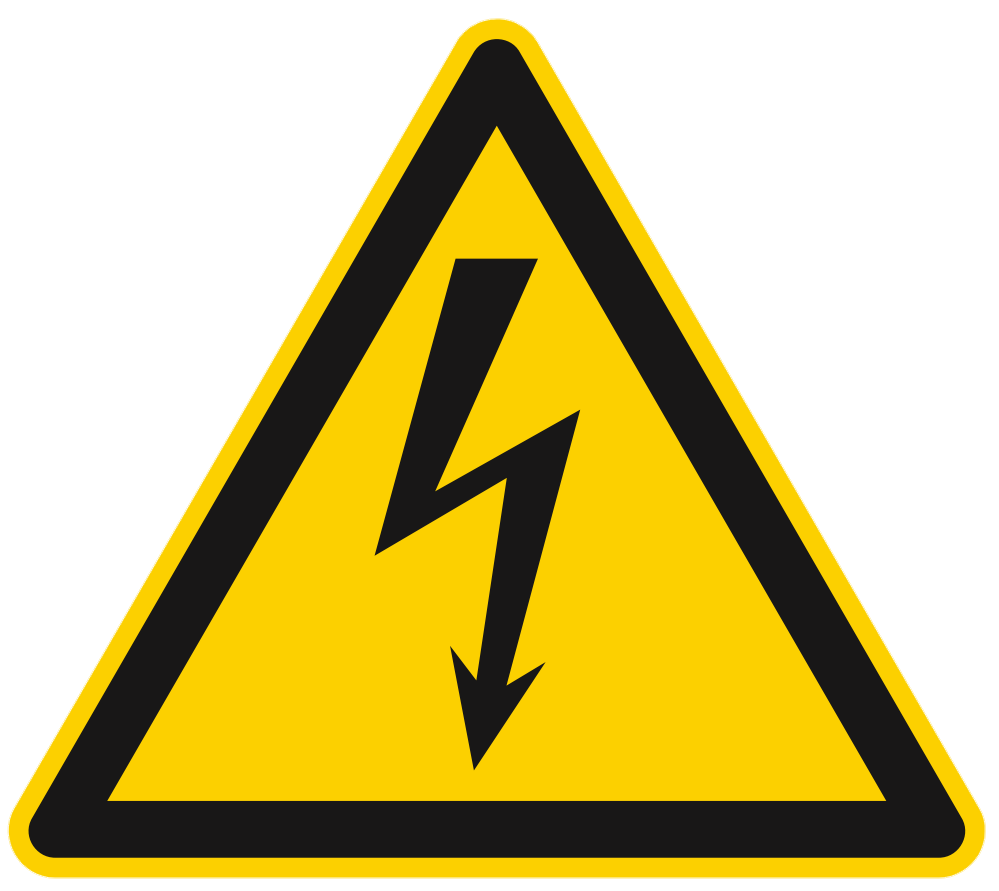
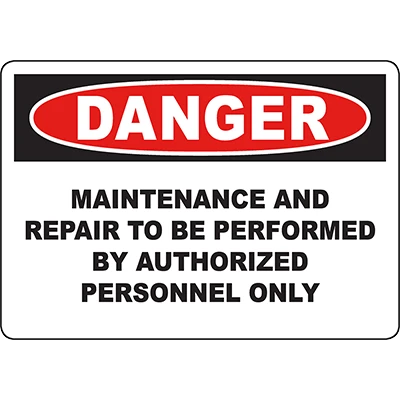
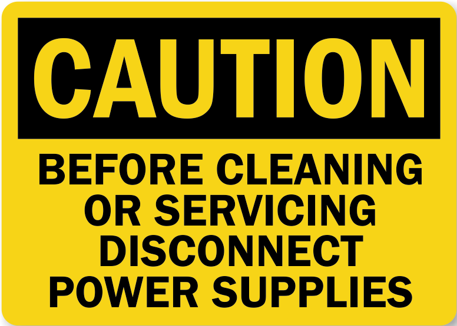

Informazioni di Sicurezza#
Le seguenti istruzioni di sicurezza, precauzioni generali e norme relative alla movimentazione e all’ambiente operativo devono essere scrupolosamente rispettate per garantire la sicurezza del personale, l’integrità del prodotto e il corretto funzionamento dell’impianto.
Warning
Responsabilità dell’utente
Il rispetto di tutte le norme di sicurezza riportate in questa sezione è obbligatorio e di responsabilità dell’utilizzatore finale. Il mancato rispetto può causare danni a persone, apparecchiature o compromettere il funzionamento del sistema.
Area di sicurezza dell’operatore#
Le zone intorno alla macchina vengono suddivise nel seguente modo:
Termine |
Descrizione |
|---|---|
Zone di comando |
Sono le zone in cui l’utilizzatore e gli altri operatori possono eseguire le operazioni di comando e controllo delle funzioni cicliche della macchina (“postazione di guida”), sia in automatico che in semiautomatico, agendo sugli appositi pannelli di comando o per l’esecuzione delle operazioni manuali. |
Zone di manutenzione/regolazione |
Sono le zone in cui i manutentori meccanici possono eseguire le operazioni di manutenzione o regolazione. Queste zone sono considerate a rischio e non accessibili durante il normale funzionamento della macchina. Gli operatori devono essere perfettamente a conoscenza delle avvertenze riguardante la sicurezza e dei dispositivi individuali da indossare. |
Zone pericolose |
Sono considerate tali tutte le zone all’interno (o circostanti) alla macchina con la presenza di rischi residui che possono provocare danni alle persone. In queste zone è vietato l’accesso a chiunque, durante il funzionamento della macchina. |
I pericoli ed i rischi esistenti in queste zone sono protetti, per quanto possibile, con ripari (carter, portelli) e con dispositivi di sicurezza (sensori, microinterruttori, barriere fotoelettriche) che, in caso di attivazione, provvedono ad un totale arresto della macchina stessa. Tuttavia, quando la macchina è in funzione, è assolutamente vietato operare nelle zone pericolose in quanto alcuni rischi potrebbero non essere stati totalmente annullati.
Dispositivi di protezione individuale (D.P.I.)#
Quando si opera vicino al FlexiBowl®, sia per le operazioni di montaggio, che per quelle di manutenzione e/o regolazione, bisogna strettamente attenersi alle norme generali antinfortunistiche, per questo sarà importante utilizzare i dispositivi di protezione individuale (D.P.I.) richiesti per ogni singola operazione. Riportiamo l’elenco completo dei dispositivi di protezione individuale (D.P.I.) che potranno essere richiesti per le diverse procedure:
Simbolo |
Descrizione |
|---|---|
 |
Obbligo ad utilizzare guanti protettivi o isolanti. Indica una prescrizione per il personale di utilizzare guanti protettivi o isolanti. |

|
Obbligo ad utilizzare occhiali di protezione. Indica una prescrizione per il personale di utilizzare occhiali protettivi per gli occhi. |
 |
Obbligo ad utilizzare scarpe antinfortunistiche. Indica una prescrizione per il personale di utilizzare scarpe antinfortunistiche a protezione dei piedi. |

|
Obbligo ad utilizzare dispositivi di protezione dal rumore. Indica una prescrizione per il personale di utilizzare cuffie o tappi isolanti a protezione dell’udito. |

|
Obbligo ad utilizzare indumenti protettivi. Indica una prescrizione per il personale di utilizzare specifici indumenti protettivi. |

|
Obbligo ad utilizzare un elmetto protettivo. Indica una prescrizione per il personale di utilizzare un elmetto a protezione della testa. |
Obbligo consultare il manuale/libretto delle istruzioni. Indica una prescrizione per il personale di consultare (e comprendere) le istruzioni d’uso e di avvertenza della macchina prima di operare con essa. |
{kind=link}
{kind=link}
{kind=link}
L’abbigliamento di chi opera o effettua manutenzione sulla linea deve essere conforme ai requisiti essenziali di sicurezza definiti dal Reg. UE 2016/425 e alle leggi vigenti nel paese in cui la stessa viene installata.
Dispositivi di sicurezza#
Allo scopo di garantire una totale sicurezza dell’operatore e impedire l’accesso all’interno della macchina quando questa è in movimento, la macchina è stata dotata di una serie di dispositivi di sicurezza che, in caso di attivazione, provvedono al suo totale arresto. La macchina è stata progettata e dotata di sistemi di sicurezza per ridurre al minimo i rischi dell’operatore. La macchina è provvista dei dispositivi di sicurezza descritti nella seguente tabella. Per la posizione di tali dispositivi, fare riferimento allo schema seguente.
N. |
Elemento |
Descrizione |
|---|---|---|
1 |
Carter |
È costituito da protezioni perimetrali fisse (carterature), le quali hanno funzione di impedire l’accesso ai movimenti delle varie parti della macchina durante il ciclo di funzionamento e richiedono utensili specifici per la loro rimozione. |
2 |
Interruttore elettrico |
È posizionato sul pannello comandi e permette di interrompere l’alimentazione elettrica in caso di:
|
{kind=link}

Warning
A causa della presenza di sporgenze appuntite sulle superfici o dischi rigidi con Spike, l’operatore potrebbe essere esposto al pericolo di abrasione e/o taglio in caso di contatto con esse. Indossare gli opportuni D.P.I. in caso di operazioni nelle vicinanze di tali superfici o dischi rigidi.
Warning
In caso di emergenza, togliere l’alimentazione connessa al pannello comandi per disabilitare in sicurezza i comandi del FlexiBowl®.
Pericoli e rischi#
Rumore#
Le misurazioni di rumore sono state effettuate in accordo con quanto stabilito dalle norme UNI EN ISO 11200:2020 – “Rumore emesso dalle macchine e dalle apparecchiature - Linee guida per l’uso delle norme di base per la determinazione dei livelli di pressione sonora al posto di lavoro e in altre specifiche posizioni” e la UNI EN ISO 3746:2011 “Determinazione dei livelli di potenza sonora e dei livelli di energia sonora delle sorgenti di rumore mediante misurazione della pressione sonora - Metodo di controllo con una superficie avvolgente su un piano riflettente”. Abbiamo effettuato anche la valutazione seguendo le procedure riportate nella DIRETTIVA 2006/42/CE punto 1.5.8 – punto 1.7.4.2 lettera u.
La relazione completa è contenuta nella documentazione perntinente la quasi macchina custodita da ARS. Il report di misura è disponibile su richiesta per utilizzatori e integratori.
Le misure sono state effettuate in 3 differenti condizioni operative:
FlexiBowl in funzione (MOVE, SHAKE, FLIP) senza la presenza di componenti (“funzionamento a vuoto”);
FlexiBowl in funzione (MOVE, SHAKE, FLIP) con la presenza di componenti sul disco rotante, componenti in plastica rigida;
FlexiBowl in funzione (MOVE, SHAKE, FLIP) con la presenza di componenti sul disco rotante, componenti in metallo;
Durante i cicli di funzionamento a vuoto, il livello di pressione acustica continuo equivalente ponderato A nel posto di lavoro è pari a 73.3 dB(A). Per i cicli di funzionamento con componenti, dato che il livello di pressione acustica dell’emissione ponderato A nei posti di lavoro supera 80 dB(A), si riporta nella tabella seguente anche il livello di potenza acustica ponderato A emesso dalla macchina.
FlexiBowl® 800 |
Livello di potenza sonora ponderata A Lw(A) |
Incertezza di misura K |
Livello di potenza sonora lineare Lw(z) |
Incertezza di misura K |
|---|---|---|---|---|
Funzionamento a vuoto |
82.6 dB(A) |
8.9 |
87.7 dB |
8.9 |
Funzionamento con pezzi in plastica rigida |
89.7 dB(A) |
6.0 |
90.7 dB |
6.0 |
Funzionamento con pezzi staffe metalliche |
85.0 |
6.0 |
88.5 |
6.0 |
Il livello di rumore effettivo della macchina installata durante il funzionamento presso il sito in un processo produttivo potrebbe essere diverso da quello sopra riportato poiché il rumore è influenzato da vari fattori quali:
componenti movimentati dal FlexiBowl e parametri operativi;
tipo e caratteristiche del sito;
caratteristiche della macchina su cu il FlexiBowl® è integrato;
altre macchine adiacenti in funzione.
Warning

|
Per livelli di esposizione quotidiana superiori a 80 dB(A), è obbligatorio utilizzare gli appositi dispositivi di protezione individuale. |
Backlight e Toplight#
Fare riferimento alla seguente tabella per la classificazione del livello di rischio dovuto all’utilizzo degli illuminatori Toplight e Backlight, in base alla norma EN-62471:
Colore |
Classe |
Rischio |
|---|---|---|
Bianco |
0 |
Nessuno |
Rosso |
0 |
Nessuno |
IR |
1 |
Basso |
Colore |
Classe |
Rischio |
|---|---|---|
Bianco |
0 |
Nessuno |
Rosso |
0 |
Nessuno |
IR |
1 |
Basso |
Note
Gli illuminatori infrarossi emettono luce non visibile e perciò possono apparire non funzionanti. Controllare con una telecamera con un filtro ad infrarossi installato per verificarne il funzionamento. La maggior parte degli smartphone visualizzano gli infrarossi.
Temperatura#
Warning
In condizioni di utilizzo intenso o ambienti caldi, alcuni componenti del sistema possono raggiungere temperature elevate:
Calotta stringi-disco: fino a 65°C
Motore: fino a 80°C
Il pianale superiore del telaio può presentare una zona calda ampia circa quanto il foro centrale ampliato del 25%:
{kind=link}

NOTA: Questi valori sono stati ottenuti facendo funzionare il FlexiBowl® in maniera continuativa per due settimane in un ambiente ristretto e privo di ventilazione utilizzando i seguenti parametri:
Move 90°
Pause 1000 ms
Shake +45° -45°
Pause 1000 ms
Vibrazioni#
Le vibrazioni prodotte dalla macchina, in funzione delle modalità di conduzione della stessa, non sono pericolose alla salute degli operatori.
Warning
Un’ eccessiva vibrazione può solo essere causata da un guasto meccanico che deve essere immediatamente segnalato ed eliminato, per non pregiudicare la sicurezza della linea e degli operatori.
Compatibilità elettromagnetica#
La macchina fornita contiene componenti elettronici soggetti alle normative sulla Compatibilità Elettromagnetica, condizionati da emissioni condotte e irradiate.
I valori delle emissioni rientrano nelle esigenze normative grazie all’impiego di componenti conformi alla direttiva Compatibilità Elettromagnetica, collegamenti idonei e installazione di filtri dove necessario. La macchina risulta quindi conforme alla direttiva sulla Compatibilità Elettromagnetica (EMC).
Warning
Eventuali attività manutentive sull’apparecchiatura elettrica realizzate in modo non conforme o sostituzioni errate di componenti possono compromettere l’efficienza delle soluzioni adottate.
Rischi residui#
La progettazione della macchina è stata eseguita in modo da garantire i requisiti essenziali di sicurezza per l’operatore. La sicurezza, per quanto possibile, è stata integrata nel progetto e nella costruzione della macchina; tuttavia permangono rischi dai quali gli operatori devono essere protetti soprattutto in fase di:
trasporto e installazione;
funzionamento normale;
regolazione e messa a punto,
manutenzione e pulizia;
smontaggio e smantellamento.
Di seguito per ogni rischio residuo viene fornita una descrizione, la zona o parte di macchina oggetto del rischio (a meno che non ne sia oggetto tutta la macchina) e le informazioni procedurali su come poterlo evitare:
| Rischio | Descrizione ed informazioni procedurali |
|---|---|
|
PERICOLI DOVUTI ALLA MOVIMENTAZIONE PITTOGRAMMI: 

|
Le procedure di movimentazione sono descritte al capitolo "Trasporto e installazione" del presente manuale d'istruzioni. Rischio residuo: Le operazioni di:
|
|
PERICOLO DI ABRASIONE, TAGLIO, URTO PITTOGRAMMI: 
|
A causa della presenza di sporgenze appuntite sui "Rotary Disc" con Spike, l'operatore potrebbe essere esposto al pericolo di abrasione e/o taglio in caso di contatto con esse. Indossare gli opportuni D.P.I. in caso di operazioni nelle vicinanze di tali "Rotary Disc". |
|
PERICOLO ELETTRICO PITTOGRAMMI:  |
Le operazioni di accesso e manutenzione della macchina espongono gli operatori al rischio elettrico. Gli interventi sulle apparecchiature sotto tensione devono essere effettuati esclusivamente da personale esperto e qualificato. Si raccomandano le seguenti misure di sicurezza:
|
|
PERICOLO DERIVANTE DA DISTURBI DI ILLUMINAZIONE PITTOGRAMMI: |
Il "Backlight" è posto nella parte interna del corpo macchina, fuori dalla vista dell'operatore ed è schermata quasi totalmente dai ripari del corpo macchina. Rischio residuo: L'operatore può subire danni alla vista se osserva per un lasso di tempo prolungato l'intensa luce del "Backlight". |
|
PERICOLO DERIVANTE DA POLVERI, SCHEGGE, ECC. PITTOGRAMMI: |
Al termine del ciclo di lavoro potrebbero restare sul "Rotary Disc" della macchina una serie di residui delle parti alimentate o accumuli di polveri. Procedere ad un'accurata pulizia del "Rotary Disc" dopo ogni utilizzo, come descritto all'interno del cap.7 del presente manuale. |
Warning
Non effettuare attività di manutenzione e pulizia se prima non si è provveduto a de-energizzare le energie presenti.
Warning
È assolutamente vietato rimuovere le protezioni di sicurezza installate sulla macchina o aprire i ripari fissi senza prima aver sezionato l’alimentazione elettrica e pneumatica della macchina.
Sarà cura dell’utilizzatore provvedere a:
analizzare i rischi che potrebbero verificarsi durante una fase di movimentazione e di installazione all’interno della propria sede (le analisi fatte sulla movimentazione della macchina sono state fatte solo in considerazioni delle caratteristiche della stessa);
sensibilizzare ed istruire il personale addetto alle operazioni sulle postazioni di lavoro e il personale addetto alla conduzione della macchina;
applicare le segnaletiche visive di sicurezza nell’ambiente di lavoro dopo aver valutato i rischi all’interno delle aree di transito o di comando.
Pittogrammi di sicurezza apllicati alla macchina#
Nella tabella di seguito sono elencati i pittogrammi presenti sulla macchina, solitamente presenti accanto al pannello comandi.
Pittogramma |
Descrizione |
|---|---|
 |
PERICOLO! SOLO IL PERSONALE AUTORIZZATO PUÒ ESEGUIRE LAVORI DI MANUTENZIONE O RIPARAZIONE. Indica un divieto ad eseguire lavori di manutenzione o riparazione a personale non autorizzato. |
 |
ATTENZIONE! DISCONNETTERE L’ALIMENTAZIONE ELETTRICA PRIMA DI ESEGUIRE OPERAZIONI DI PULIZIA O MANUTENZIONE. Indica un divieto ad eseguire lavori di manutenzione o pulizia non prima di aver staccato l’alimentazione elettrica. |
{kind=link}
{kind=link}
Integrazione con sistemi robotizzati#
Requisiti di sicurezza della cella#
Warning
Il FlexiBowl® opera in stretta connessione con sistemi robotizzati di terze parti. L’utente deve garantire che l’area di lavoro sia dotata di tutte le misure di sicurezza necessarie imposte dalle normative pertinenti
Attenzione durante l’operatività#
Warning
Durante il funzionamento del sistema, tenere sempre conto di:
Ingombri fisici del robot e del FlexiBowl
Traiettorie e velocità dei movimenti robotici
Possibili situazioni impreviste (caduta pezzi, errori di prelievo)
Zone di pericolo durante le fasi di vibrazione del FlexiBowl
Precauzioni generali prima degli interventi#
Disconnessione alimentazioni#
Warning
Prima di eseguire qualsiasi intervento di manutenzione, modifica o ispezione sul sistema, assicurarsi sempre che:
Tutte le fonti di alimentazione elettrica siano disconnesse (VisionController, FlexiBowl, Camera, Illuminatore)
L’alimentazione pneumatica sia scaricata e disconnessa (se presente)
I cavi di collegamento siano fisicamente scollegati
Il robot sia in modalità di sicurezza o completamente spento
Procedure di sicurezza#
Warning
Non affidarsi esclusivamente agli interruttori: utilizzare procedure di lockout/tagout (LOTO) quando disponibili.
Modifiche e manomissioni#
Divieto di modifiche non autorizzate#
Warning
Non modificare mai il prodotto o i suoi componenti senza espressa autorizzazione scritta di ARS S.r.l.
Conseguenze delle modifiche#
Warning
Modifiche non autorizzate possono:
Causare malfunzionamenti del sistema
Invalidare la garanzia
Creare rischi di lesioni, scosse elettriche o incendi
Compromettere le certificazioni di sicurezza del prodotto